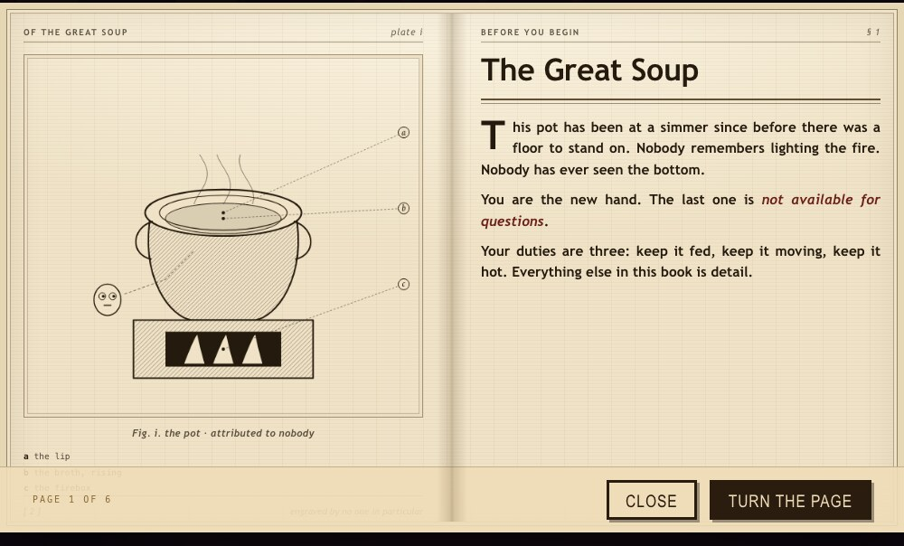

What it is
A finite incremental about stirring. You are the newest hand in a kitchen that has been simmering the same pot since before there was a floor to stand on. Nobody will tell you what is in it. Nobody remembers lighting the fire, and nobody has ever seen the bottom. Your job is to keep it going, and to feed whoever sits down.
Most games of this shape go up forever. This one is built to end — five acts, a last serve, and then a question about whether you would like to cook the next one harder.
Your duties are three: keep it fed, keep it moving, keep it hot. Everything else in this book is detail.
How it plays
- Stir. Drag the ladle through the broth. Movement is income — a still pot earns nothing, and the pot notices.
- Throw things in. Twenty-six ingredients, each with its own flavour and its own opinion about being cooked. Some of them climb back out. Thrown ingredients are scored on the way down, which is how the kitchen ended up with a diving competition.
- Mind the heat and the volume. Both spread, both drift, and both are yours to hold steady while you are busy elsewhere.
- Someone knocks. Ten diners come to the hatch, each ordering by a different kind of rule — a flavour, a balance, an absence, a thing they will not name. Serve twenty of them across the run.
- Spend the broth. A tech tree, recipe cards, a codex of everything you have ever cooked, and a cookbook that is a genuine plate book, engraved by no one in particular.

Things worth finding
- The bard. Hold the spoon perfectly still for seven seconds and he leaps out of the ladle and sings for twenty, with the whole room dancing on his beat. Nothing can touch him while he plays.
- The ladle ladder. Occasionally the thing at the hatch is not a customer. Four clicks of tearing hands you the next ladle up a six-rung ladder. It carries between runs, then stops for good. Cosmetic, always.
- The character sheet. One page with every upgrade, star, medal and ladle on it, opened from the chef block in the corner.
- The wall of runs. One framed ladle per finished run, lit or dark depending on the ending you chose.
- Away progress. Close the tab. The pot keeps going, and tells you what happened while you were out.
Where it stands
Playable end to end, including the end. The parts still being worked on are the pacing of acts four and five, an economy that has to become measurable before any balance opinion is worth having, and audio — which does not exist yet.
It is one HTML file of roughly 9,700 lines with zero dependencies: canvas 2D
for everything drawn, localStorage for the ledger, and a test
harness that stubs enough of a browser to run the real file in Node and
drive synthetic play through it.